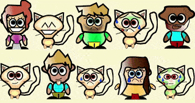

Avatar Project
Virtual Pets vs. Virtual Selves for Exercise Motivation
Virtual pet games- in which a user regularly cares for a
small creature- have been effectively used as health behavior
change agents with children. Research using virtual selves
(avatars) have also provided promising results.
We outfitted two groups (N=20) of college-age students
with fitness trackers that controlled either (1) the health and
happiness of a virtual pet or (2) the weight and happiness of
a virtual avatar, and compared the effects on their exercise
patterns over the course of two weeks. We also measured
participant narcissism, empathy, and self-image to compare
psychographic data against exercise motivation and pet/avatar
attachment.
A version of the avatar-based version of the webapp is hosted live at minime.davidbramsay.com.
This work was documented for Roz Picard's Behavior Change class-- read the paper here.
